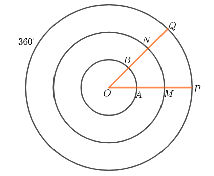
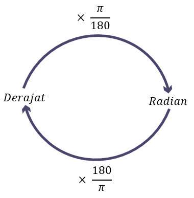

A. Derajat
Satuan sudut yang telah kita pelajari sebelumnya adalah satuan derajat (...°).
satu derajat diartikan sebagai \(\frac{1}{360}\) putaran mengelilingi satu titik tertentu. Perhatikan hubungan putaran dengan derajat sebagai berikut.
$$\frac{1}{360} \space Putaran = 1°$$
$$1 \space putaran = 360°$$
B. Radian
Besar sudut dalam Radian dapat didefinisikan sebagai perbandingan antara panjang busur di hadapan sudut dan panjang jari-jari lingkaran.
Untuk lebih jelasnya, perhatikan Gambar 3.1 Menunjukkan tiga lingkaran terpusat di titik \(O\)
maka berikut perbandingannya.

Gambar 3.1
$$Radian \space AOB = \frac{panjang \space busur \space AB}{Jari-jari \space OA}$$
$$Radian \space MON = \frac{panjang \space busur \space MN}{Jari-jari \space OM}$$
$$Radian \space POQ = \frac{panjang \space busur \space PQ}{Jari-jari \space OP}$$
Setelah kita melihat perbandingan diatas maka kita bisa menyimpulkan bawa:
$$ Ukuran \space radian = \frac{Panjang \space Busur}{Panjang \space Jari-jari}$$
C. Hubungan Antara Radian dan Derajat
Kita telah mengetahui bahwa \(Panjang \space busur = r\) pada keliling lingkaran membentuk sudut 1 radian dipusat lingkaran.
\(Keliling \space Lingkaran = 2 πr\), berart keliling lingkaran \((2πr)\) membentuk sudut \(2π\) radian di pusat lingkaran. Sementara itu,
sudut pusat lingkaran = 360°, maka hubungan antara radian dan derajat adalah sebagai berikut.
$$2π=360°$$
$$π=180°$$
$$atau$$
$$1°=\frac{π}{180}rad$$
$$1 \space rad=\frac{180}{π}°$$
